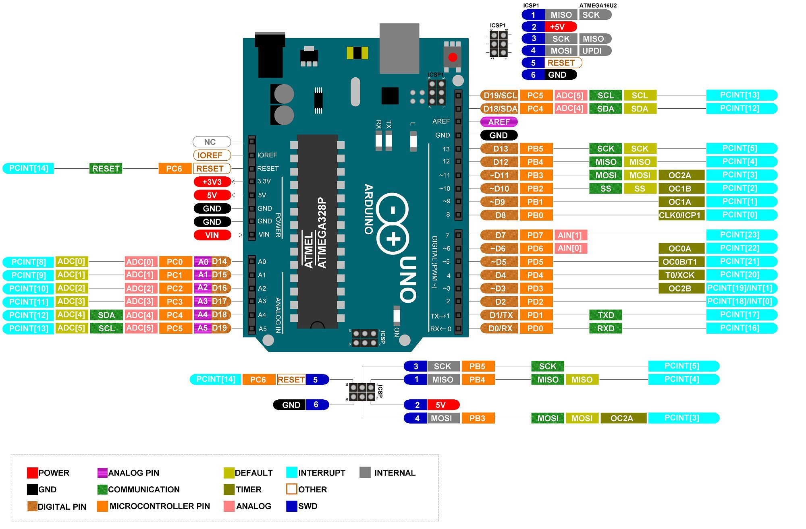

🧠The Arduino Uno is your *brainy little buddy* – it runs the show in your electronics projects 🎬
🔌 It has a total of 20 input/output pins – but wait! Not all pins are born equal 😎
🔵 Digital Pins (0–13): These are on/off pins – great for buttons, LEDs, buzzers, etc.
🟢 Analog Pins (A0–A5): These read sensors with more detail (like how much light or sound is hitting a sensor 🎚)
⚡ Power Pins:
5V ➜ full power 💥
3.3V ➜ low power for delicate sensors
GND ➜ the ground… it’s like the return path of electricity 🧲
📡 Pins like RX/TX (0 & 1) are for serial communication – don't mess with them unless you know what you’re doing 💬😅
🚨 Just remember – *some digital pins (like 3, 5, 6, 9, 10, 11)* support PWM – that means they can fake analog output ✨ (great for dimming LEDs or controlling motors)
